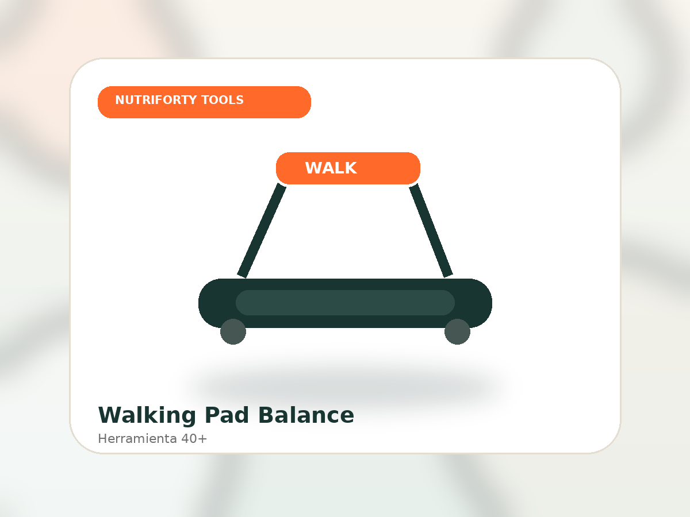
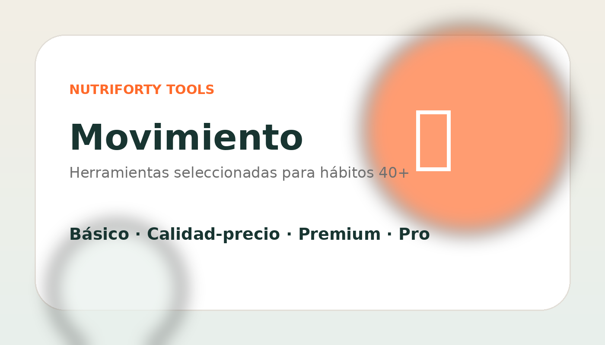
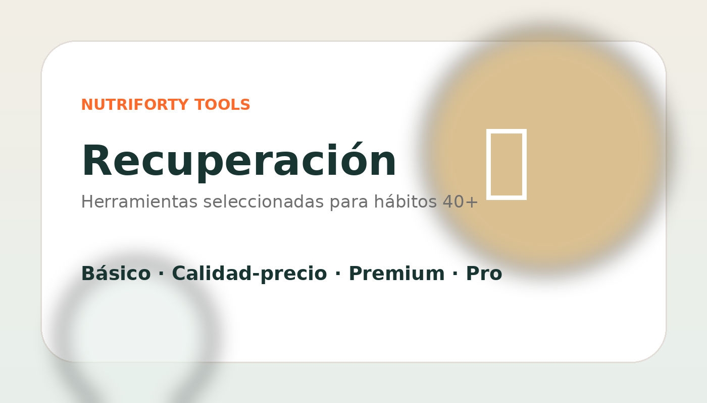
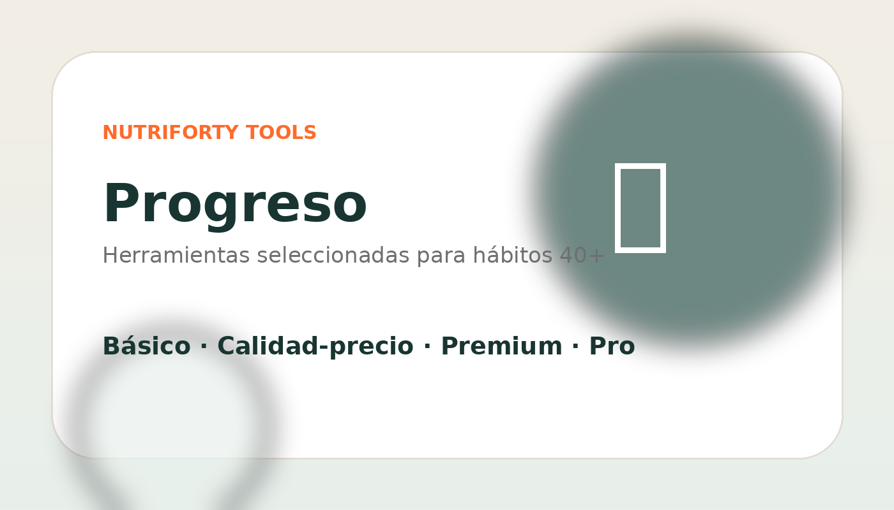

Página ejemplo
Movimiento después de los 40
La página pilar explica primero el hábito y luego recomienda categorías: walking pads, bandas, mancuernas y fuerza compacta.
Ver ejemplo completoNo es una tienda cualquiera. Es una guía editorial para elegir productos que ayudan a moverte más, cocinar mejor, recuperarte y medir progreso sin obsesionarte.

Para quién es, qué problema resuelve, qué mirar antes de comprar y cómo usarlo dentro de una rutina 40+.
Recomendamos herramientas que hacen más fácil sostener buenos hábitos después de los 40.
La recomendación de producto viene después de explicar el problema, el criterio de compra y el uso realista. Así NutriForty Tools funciona como blog, escaparate recomendado y fuente de confianza para Google, IA y redes sociales.
Cada pilar combina guías, comparativas y productos recomendados por rango de precio.

Herramientas para sumar pasos, fuerza y constancia sin depender del gimnasio.
Utensilios para meal prep, proteína, porciones y cocina saludable realista.

Productos para descanso, movilidad, masaje y rutinas de recuperación sostenibles.

Medir sin obsesionarse: hábitos, pasos, sueño, composición y constancia.
Un escaparate con criterio editorial, no un listado infinito de enlaces.

La página pilar explica primero el hábito y luego recomienda categorías: walking pads, bandas, mancuernas y fuerza compacta.
Ver ejemplo completoContenido educativo para captar búsquedas informativas y llevar al usuario a una recomendación clara.
Leer guía →Contenido de decisión para usuarios cerca de comprar.
Ver comparativas →Web estática, rápida y preparada para reemplazar TU-TAG-21 por tu ID de afiliado cuando lo tengas.